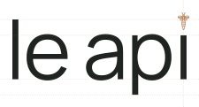
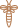
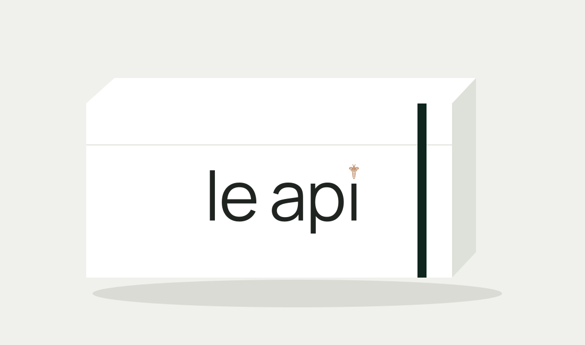

le api
Руководство по фирменному стилю
Версия 0.9 · 18 октября 2026
Мастер-кандидат для визуального согласования.
Выбранный зелёный №02 — #0F251D.
Нейтральная типографика и медная пчела.
Основа — мастерство, обмен опытом и работа команды.
Характер и смысл

le api — итальянское «пчёлы»: две части, строчные буквы и пробел. В тексте используется обычная латинская i; пчела заменяет её точку только в векторном знаке.
Профессиональное сообщество мастеров и команд салонов. Спокойный, собранный, уверенный образ без демонстративной роскоши.
Три принципа: ясная типографика; одна узнаваемая деталь; светлая среда с зелёными акцентами.
Типографическое решение
Основа словесного знака — Manrope Regular, не Light и не Medium. Выбор сделан после сравнения реальных начертаний на одинаковой высоте и в малом размере.
l сохранена: её верхний штрих задаёт вертикаль композиции. Нижний штрих p сокращён до 17,50 единиц относительно базовой линии; овал p сохранён.
Контуры и интервалы фиксированы в SVG. Логотип нельзя заново набирать шрифтом или горизонтально сжимать.
Построение и интервалы

Мастер-сетка исходного кегля — 92. Базовая линия y67,62; верх строчных y17,94; верх l y0. Оптический выход округлых форм сохранён.
Просветы: le9,30; между словами20,80; ap10,30; pi10,30. Ось пчелы совпадает с осью i. Просвет до i — 6 единиц.
Оптический баланс важнее формального равенства. Золотое сечение не используется как доказательство качества или универсальная схема кернинга.
Пчела

Сохранены 15 исходных контуров: усики, голова, крылья, корпус и полосы. Размер — 72% от предыдущего детального мастер-знака.
Для уменьшенного рисунка линия оптически усилена. Пчела статична, центрирована над i и не превращается в отдельный летающий персонаж.
Медный оттенок #B57C52 используется плоско. Блики, фольга и эффекты материала возможны только в отдельно проверенном физическом производстве, не внутри цифрового мастера.
Цветовая система
Основной зелёный: #0F251D / RGB15,37,29.
Медь: #B57C52 / RGB181,124,82.
Основной белый: #FFFFFF.
Вторичная светлая поверхность: #F6F6F4.
Основной текст: #202421.
Вторичный текст: #656962.
Зелёный выбран владельцем из пяти тёмных оттенков. Медь — рекомендация для финального согласования. CMYK и печатные краски подбираются по профилю и цветопробе, не по приблизительной конвертации.
Исполнения
На белом и светло-сером: нейтральные буквы, медная пчела.
На зелёном #0F251D: светлые буквы #F6F6F4, та же медь #B57C52.
Одноцветное исполнение: весь знак одним цветом. Применять там, где два цвета технически недоступны.
Не размещать знак поверх пёстрых фотографий без спокойного поля.
Охранное поле
X — ширина вертикального штриха l: 6,762 единицы мастер-сетки. Минимальное свободное поле — 2X со всех сторон, включая усики пчелы и нижний штрих p.
Предоставленные SVG уже содержат не меньше 2X внутреннего поля. Не обрезать холст по буквам. Дополнительные поля макета не заменяют внутреннее охранное поле.
Выравнивать знак по оптическому центру видимых контуров, а не по случайному размеру текстового блока.
Масштаб и воспроизведение
Детальный мастер рекомендуется показывать от 320CSSpx по ширине холста; это рабочий ориентир до проверки физических экранов. На Retina детали могут сохраняться лучше, чем на 1x-дисплее.
160px показаны как стресс-проба, не как подтверждённый минимум. Для маленькой иконки потребуется отдельная оптическая адаптация с проверкой на устройстве.
Вектор сохраняет контуры, но не отменяет физический предел разрешения. Для печати минимальный размер устанавливается цветопробой.
Шрифты вне логотипа
Семейство Manrope: Regular400 для основного текста; Medium500 для коротких акцентов; SemiBold600 для элементов управления при необходимости. Для интерфейса отдельно проверить кириллицу, кегли и доступность.
Логотип — изменённые контуры Manrope Regular с собственной расстановкой; обычный набор не воспроизводит мастер.
Лицензия SIL Open Font License включена в пакет. Не выдавать используемый шрифт за разработанный специально для проекта.
Светлая среда

Направление следующего этапа: преимущественно белый интерфейс, спокойные нейтральные поверхности и зелёный для выбранных состояний, навигации и ограниченных акцентов.
Медь — фирменная деталь знака; не применять её ко всему тексту и кнопкам. Изображения работ сохраняют собственные цвета.
Стеклянные эффекты относятся к отдельным элементам интерфейса и не меняют плоский логотип. Это направление, не готовый редизайн экранов приложения.
Контроль применения
Не растягивать знак; не менять толщину букв и межбуквенные интервалы; не убирать пробел; не перемещать и не вращать пчелу; не добавлять тени, случайный блеск или градиент.
Перед выпуском сверять светлое, тёмное и одноцветное исполнение, крайние размеры и реальные носители.
В пакет входят SVG, спецификация и руководство. Цвет выбран; новый мастер и медь ожидают визуального подтверждения владельца. Проверка сходства и регистрация знака — отдельный этап.